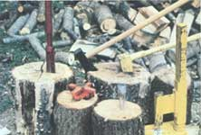
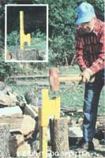
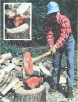
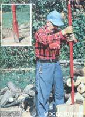
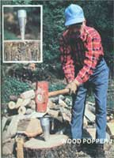
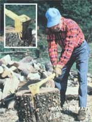
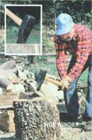

Last fall we ran an article called The Great Wood-Splitting Contest, in which we compared three high-quality manual log-busting tools: the massive Monster Maul, the swivel-edged Chopper 1, and an ordinary go-devil splitting maul. Well folks, those must have been the simple days of yesteryear - because there're so many manual splitting tools on the market this season, that our previous competition is practically antiquated. That being the case, there was nothing left for us to do but to gather up samples of all the new muscle-powered round rippers we could get our hands on and then stage (what else?) THE GREAT WOOD-SPLITTING CONTEST II!
Now most folks use a splitting maul and a sledgehammer-and-wedge combination to cut their fuel logs down to size. And, interestingly enough, each of the six new implements we acquired for this test is patterned after either a wedge or a maul, so we've divvied the entries up into those two classes for comparison.
THE WOOD POPPER 1, Giesler Engineering, 723 Mount Road, Aston, PA 19014. Telephone: 1-800-428-8616.
This unconventional "wedge" is actually cone-shaped, is constructed of super-high-strength aluminum, and weighs a mere 20 ounces! Its inventors feel that a heavy wood-pryer absorbs impact - thereby wasting a sledge swinger's energy - while their light tool better transfers the force of a blow to the wood.
So the Wood Popper 1 is an intentionally small item. But sure enough, the little cone is very effective. It even offers the "bonus" of occasionally splitting a round (including one of our 11"-diameter, 23"-tall locust sections) into three pieces.
Of course, like a traditional wedge, the tool can get almost irretrievably buried in a tough log. The real problem we faced with the lightweight, though, concerned safety: If one doesn't hit the device dead-on flush during the early set-it-in blows, the Wood Popper can pop right out of a round and fly as far as 20 feet! (It didn't do so often during our tests, but such an occurrence could be dangerous.)
THE WOODOX, WOODOX WOODSMAN, 655 Schuylkill Road, Phoenixville, PA 19460.
This four-edged implement is designed to quarter - not halve - a log. Unlike the Wood Popper 1, the sharp-tipped WOODOX never once jumped or fell out of a round, so it seemed to be a safe wedge to work with. And it is downright satisfying to see a billet you've been working on bust into four separate sections.
Unfortunately, however, it takes a lot of effort to drive this many-bladed tool through a round. (In fact, we almost began to feel that it would take a "wood ox" to pound the wedge through logs of more than a foot in diameter!) So, although the WOODOX didn't seem as potentially hazardous as either the Wood Popper 1 or a traditional wedge, it was far less efficient.
THE E-Z SPLIT LOG SPLITTER, Tri-Star Corporation, R.R. 3, Illini Street, Vandalia, Illinois 62471.
This 29-pound device has two pieces, a stand-and-post unit and a conventional five-pound wedge that rides a guide up and down the pole. The advantage of the E-Z Split's design is the stability it adds to the wedge: The iron wood pryer never bounces out of a round or leans over as you pound it. In addition, the logs themselves - being held between the wedge and the stand - are quite stable and rarely fall over. So the E-Z does do away with some of the normal irritations of using a free-standing wedge.
On the other hand, the splitter presents some annoyances of its own. For one thing, it's not an entirely simple matter to get a log properly positioned in the device. (We often had to slip the 14-pound top piece all the way off until a round was precisely in place.) In addition, the tool's virtue of stability can become the sin of inflexibility when a crack line opened up by the wedge doesn't run exactly in line with the device - or if, after a couple of whacks, you decide you'd rather drive your wedge in somewhere else. (It isn't easy to liberate a log from of E-Z's grip!)
The tool was able to go through 23"-tall-by-16"-diameter hardwood rounds, though, and seemed like a fairly safe device to use (so long as its operator never lets his or her foot get under that falling wedge). Still, it took a goodly number of whacks to force the wedge through a log. And the tool's hollow post sets up a real clanging racket when the splitter is in use!
THE WOODCHOMPER, Watson Mfg. Co. Inc., P.O. Box 861, Brownsville, Tennessee 38012.
Like the E-Z Split Log Splitter, the Woodchomper incorporates a five-pound wedge and is a noisy, slow-but-steady log cracker. Unlike the former tool, though, this blade-on-a-stick device is quite easy to position and maneuver. Just pick up the 22-pound implement (you have to hold on to both pieces), put it where you want it, and set it in place with a few gentle starter taps.
To drive in the Woodchomper's wedge, you must slide the ten-pound cover piece down onto the central shaft. The assembly thus allows the user to stand erect and raise his or her arms up and down (instead of swinging a sledgehammer overhead), and some folks may prefer such a limited, guided movement. The splitter also seemed - as long as its operator doesn't get a toe under the tool or get recklessly carried away - like a safe device to use. Of course, one can't get as much force into each blow with this lift-and-drop technique as is possible with a good hard swing, so it takes a number of moderate strokes with the Woodchomper to drive the wedge through wood (and the tool might be hard-pressed to tackle truly stubborn rounds).
THE SIDE WINDER, Chopper Industries, P.O. Box 87, Easton, Pennsylvania 18042.
Some old-time, axe-wielding log splitters like to "twirl" the tool - that is, give the axe a slight sideways snap of the wrist - right when the blade strikes the wood, in order to deliver a little extra splitting force as the cutting edge enters the log. The eight-pound Side Winder is designed to help its user automatically duplicate that wood-splitting feat: The instrument's weight is slightly unbalanced, one side of its blade bulges out more than the other, and its cutting edge has an extra indentation on one side - all to make the maul snap sideways on impact.
Well, as far as we could tell, the tool showed no special "automatic twirl" ability, and was consequently no more effective at splitting wood than is an ordinary eight-pound go-devil. (Mind you, that judgment's not an insult - the average splitting maul is a fine wood-cleaving implement.) As a pleasant plus, however, the side-weighted maul (thanks to its thicker blade) did seem to have less tendency to get stuck in a round than does the normal go-devil.
THE MONSTER MAUL, Sotz Corporation, 13628 Station Road, Columbia Station, Ohio 44028.
Last year, we covered the original big Monster Maul and decided that the woodcracking tool "seemed unbreakable (no more ruined handles!), never stuck in a round, divided even the knottiest pieces," but was danged heavy. Well, Leonard Sotz, the maul's creator, had (unbeknownst to us at the time) already addressed that problem by devising a smaller version of the tool. Moreover, this "little brother" has been so successful that Sotz no longer even tries to market the larger maul. So for all intents and purposes, the "younger" round ripper shown in the accompanying photos is now the official Monster Maul.
And even though the MM has slimmed down a bit since we first tried it (the total head-and-handle weight has decreased from 23 pounds to 15), the tool is still mighty effective. In fact - throughout the course of our competition - whenever we met a round a little too stubborn for either the Side Winder or an eight-pound go-devil, we just rared back with the Monster Maul and broke 'er up ... often with one whack!
The Monster Maul is plainly the most effective go-devil-type tool we've ever tried. Mind you, the thing is hefty, and its butt end can't be used for a sledge (unless you want to risk bending the handle) -but Lordy, the MM sure does split wood.
To sum it all up, none of the Class 1 Wedges impressed Mother's hammer swingers as being a better log cracker than a normal sledge-and-wedge combination (although individual readers might prefer one of the items for safety or ease of usability). By contrast, both Class 2 Mauls compared well to the normal go-devil. In fact, the heavy-but-manageable Monster Maul was a more powerful log breaker than its traditional counterpart.
There you have it. Of course, our opinions are merely our opinions (different strokes - and tools - suit different folks), but at least you've now heard Mother's views on this year's crop of manual woodcrackers, while we've gotten some work done toward building our winter woodpiles. And those, friends, are "II" good reasons for The Great Wood-Splitting Contest II!
|
 MOTHER EARTH NEWS STAFF The new wood-splitting tools tested by Mother's staff in the second Great Wood-splitting Contest. |
 MOTHER EARTH NEWS STAFF Woodchomper |
 MOTHER EARTH NEWS STAFF WOODOX |
|
 MOTHER EARTH NEWS STAFF E-Z Split Log Splitter |
 MOTHER EARTH NEWS STAFF Wood Popper 1 |
 MOTHER EARTH NEWS STAFF Monster Maul |
|
 MOTHER EARTH NEWS STAFF Side Winder |
|
|